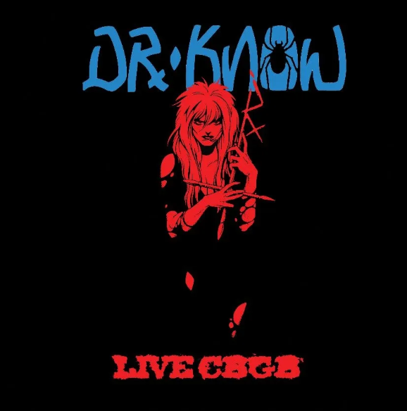
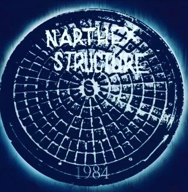
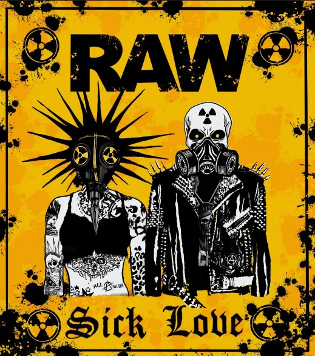
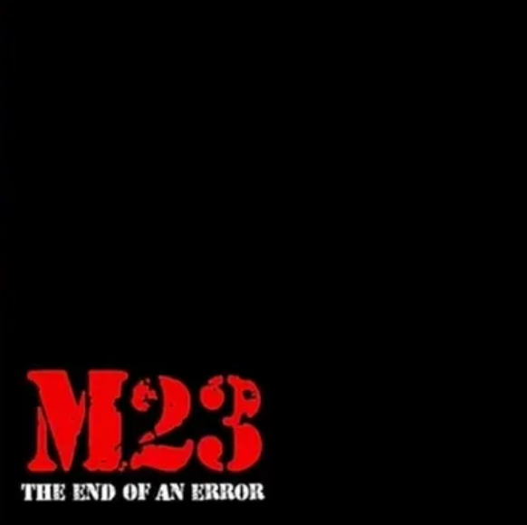
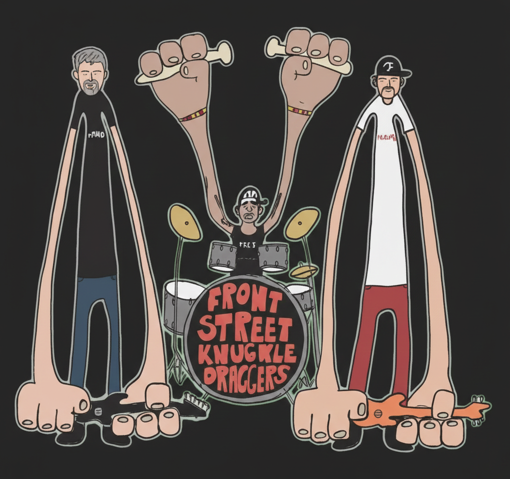
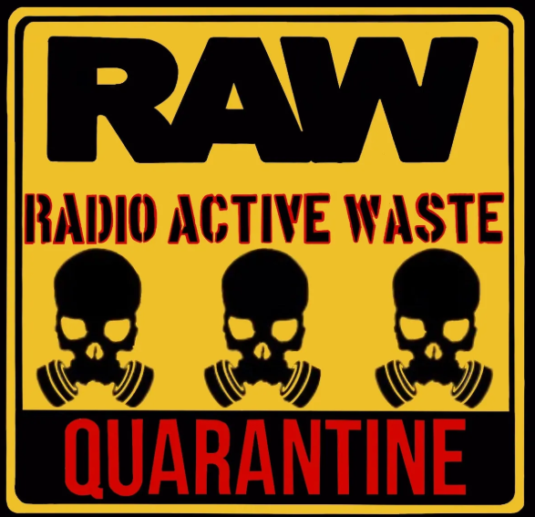
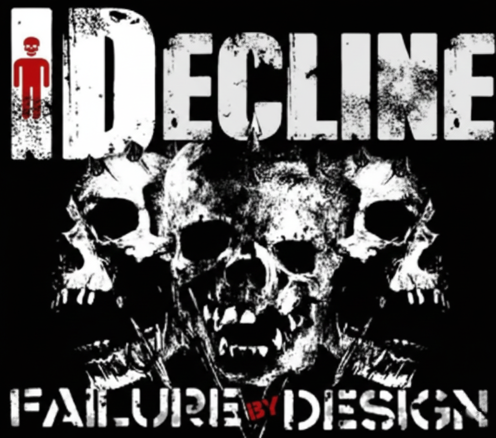
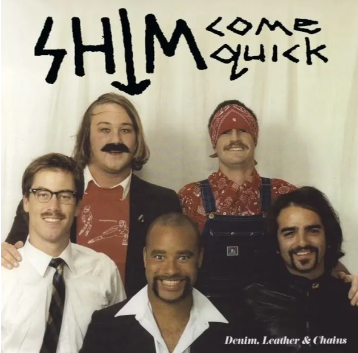

City
Ventura, Oxnard, 805, SoCal, International
Browse limited-run vinyl from Ventura, 805, and SoCal punk bands - classic records, live sets, and new underground releases.
Ventura, Oxnard, 805, SoCal, International
1980s, 1990s, 2000s, New
LP, EP, 7-inch, Color variants

Legendary live East Coast recording from a Ventura hardcore standard-bearer.
Year: 1989 | City: Ventura, CA
$49.00
Restored 805 punk recordings from the scene's early blast radius.
Year: 1984 | City: 805 Region
$26.00
Current Ventura punk with jagged guitars and blown-out urgency.
Year: New | City: Ventura, CA
$24.00
Classic hardcore urgency for the forgotten youth and first-time crate diggers.
Year: 1990s archive | City: Ventura, CA
$27.00
Street-hardened punk with high-energy rhythms and heavy hooks.
Year: New | City: SoCal
$26.00
Companion release to Sick Love with sharper edges and urgency.
Year: New | City: Ventura, CA
$24.00
Hard-edged SoCal punk/hardcore built for loud rooms.
Year: New | City: SoCal
$25.00Raw punk title anchored in direct songwriting and speed.
Year: New | City: SoCal
$23.00
Riff-heavy, street-level SoCal punk release.
Year: New | City: SoCal
$25.00Melodic SoCal punk cut distributed by Poison Well.
Year: New | City: SoCal
$24.00